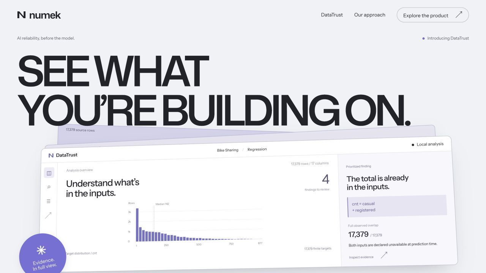
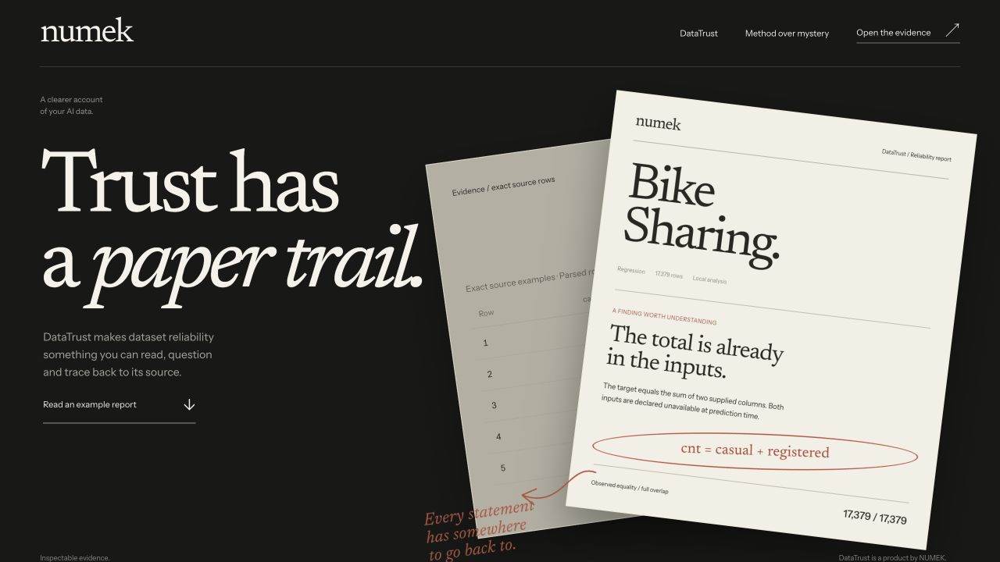
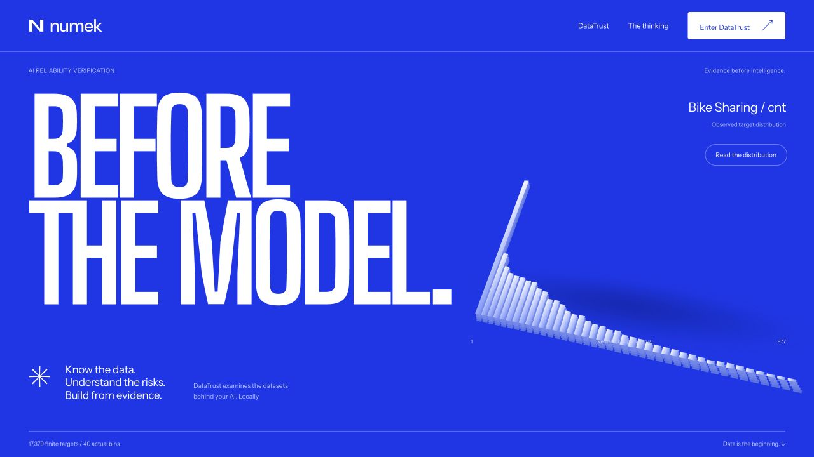
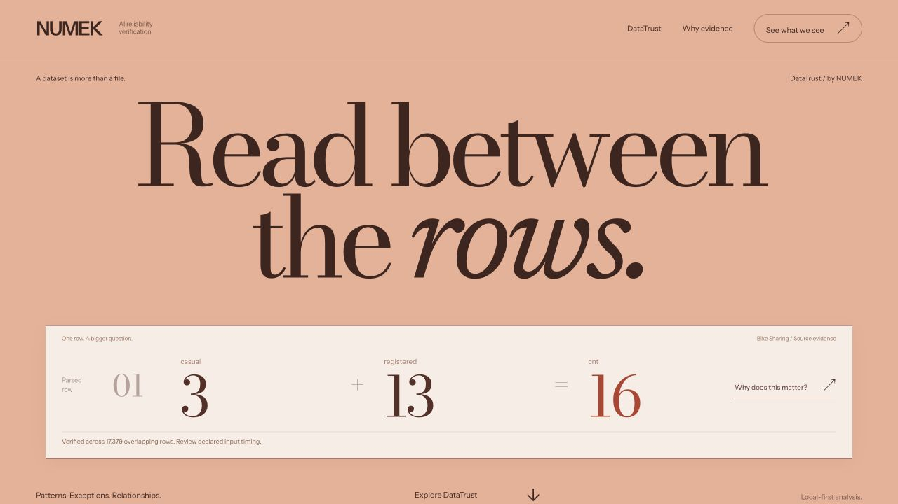
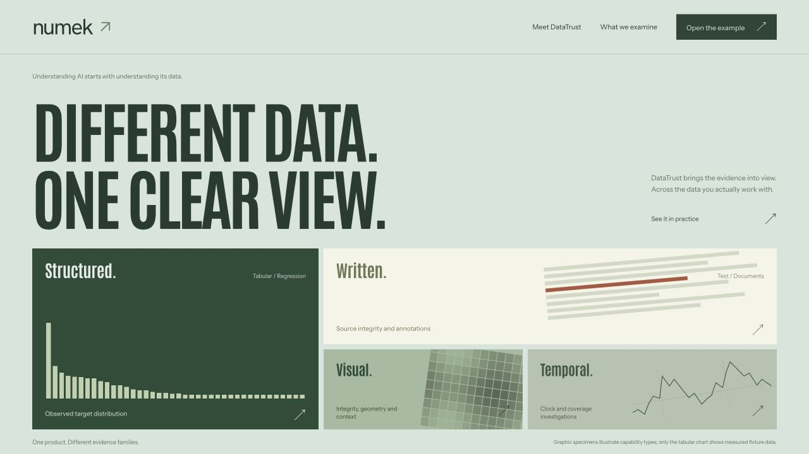

01 / In full view.
Mona / Instrument SansThe product as the primary brand object. Layered evidence resolves into a flat analytical workspace.

02 / An open record.
Newsreader / HankenAn authored, inspectable account of dataset reliability. Report reading and exact evidence share a surface.

03 / Before the model.
Big Shoulders / Instrument SansA real distribution becomes a distinctive brand graphic, then returns to a fully labeled analytical chart.

04 / Read between the rows.
Bodoni Moda / Instrument SansA real observation becomes a question worth investigating. Prose and source evidence stay close.

05 / A common language.
Antonio / HankenDifferent representations, one recognizable identity. A dataset index opens into a focused investigation.
Full-sized studies.
Actual typography.
Evidence in context.
Each includes an opening, a live interaction and an application/result treatment. Full landing pages and three-screen prototypes follow direction approval.
Research and the first round archive